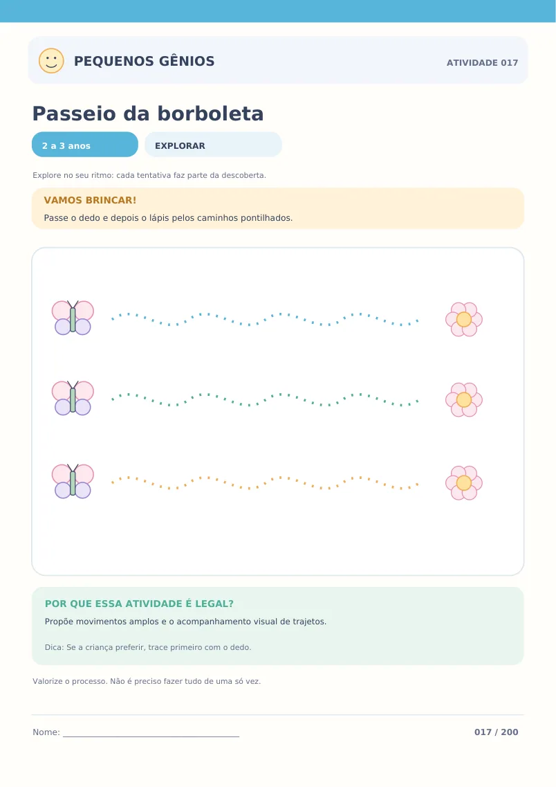

Pais e responsáveis
Atividades para brincar e aprender juntos em casa.
Um caderno com 200 atividades educativas para imprimir, pensado para crianças de 2 a 8 anos — em casa, na escola ou como recurso complementar em atendimentos.
Material digital em PDF · Você imprime quando quiser

200 propostas para escolher, imprimir e adaptar em diferentes contextos de aprendizagem.
Atividades para brincar e aprender juntos em casa.
Ideias imprimíveis para complementar o planejamento pedagógico.
Recursos complementares adaptáveis aos objetivos de cada atendimento.
Propostas para diferentes idades, habilidades e ritmos de aprendizagem.
Atividades de percepção, comunicação, rotina e participação.
O material inclui atividades inclusivas e adaptáveis, com apoios visuais, oportunidades de escolha e diferentes formas de comunicação. São propostas que podem ser selecionadas conforme as habilidades, preferências e necessidades de cada criança — sem promessas terapêuticas ou indicação universal.
Entenda como funciona a seção inclusiva ↗Você não precisa inventar uma atividade nova a cada dia. Escolha uma página, imprima e acompanhe a criança no próprio ritmo.
Letras, sons, palavras e primeiras leituras.
Quantidades, sequências e operações iniciais.
Traçados, caminhos e movimentos com o lápis.
Pares, padrões, observação e comparação.
Desenhos, histórias e espaço para imaginar.
Escolhas, apoio visual e participação.
200 atividades para explorar no seu ritmo. Acesso digital por R$ 19,90.
O conteúdo está organizado por faixas etárias orientativas. Você escolhe de acordo com os interesses, o momento e as habilidades da criança — sem pressa ou cobranças.
Espiar as páginas reaisFormas, traços, observação e escolhas.
Contagem, reconhecimento e padrões.
Escrita, leitura e matemática inicial.
Interpretação, lógica e criação.
Propostas adaptáveis de 2 a 8 anos.
São páginas retiradas diretamente do PDF completo — uma amostra gratuita e fiel do que você recebe.

2 a 3 anos 6 a 7 anos
6 a 7 anos Inclusiva • TEA
Inclusiva • TEA200 atividades para explorar no seu ritmo. Acesso digital por R$ 19,90.
O kit conta com uma seção de atividades inclusivas e adaptáveis, incluindo propostas que podem apoiar crianças com TEA (Transtorno do Espectro Autista) e outros perfis neurodivergentes, com propostas de escolhas, organização de rotina, percepção visual e comunicação.
As atividades são sugestões complementares, não exclusivas e não representam tratamento ou validação clínica individual. Não substituem avaliação ou acompanhamento profissional.
200 atividades para explorar no seu ritmo. Acesso digital por R$ 19,90.
12 situações ilustrativas, com nomes fictícios, para imaginar aplicações em casa, na escola e em atendimentos.
Gostei da ideia de escolher uma atividade curtinha para fazer com meu filho depois da escola.
Os exercícios de traçado e sequência ajudam a variar meu planejamento semanal.
As propostas visuais podem ser adaptadas ao ritmo e aos interesses de cada criança.
Ter as atividades organizadas por idade facilita escolher por onde começar.
As páginas de letras e números são úteis como apoio a atividades de sala.
Gosto de materiais com tarefas curtas que permitem ajustar a mediação.
A amostra me ajudou a entender como o material pode entrar na nossa rotina.
As propostas de observação e associação podem render boas atividades em grupo.
Os cartões de escolha podem apoiar oportunidades de comunicação com adaptações.
Um repertório variado pode ajudar a equipe a planejar propostas diferentes.
Prefiro poder imprimir só a página que vamos usar naquele dia.
O material pode complementar propostas individualizadas, sem substituir o acompanhamento.
Os 12 relatos e nomes são fictícios e ilustrativos. Não representam avaliações reais ou experiências verificadas de compradores. Substitua-os por depoimentos autorizados quando estiverem disponíveis.
200 atividades para explorar no seu ritmo. Acesso digital por R$ 19,90.
O material apresenta referências conhecidas sobre brincadeira, aprendizagem, desenvolvimento infantil e comunicação alternativa. Elas ajudam a orientar princípios gerais — não significam certificação ou validação individual das 200 atividades.
Edição indicada para uso em 2026 e 2027, com escolha de atividades por interesse e habilidade.
Preço promocional anunciado por tempo limitado. Produto digital; não há envio físico. Disponibilização do arquivo a ser configurada na plataforma de pagamento.
Um arquivo digital em PDF com 200 atividades educativas, além de capa, apresentação e sumário. A entrega ao comprador precisa ser configurada na sua plataforma de pagamento.
É totalmente digital. Você pode salvar o PDF e imprimir as páginas que desejar, conforme seu uso permitido.
As atividades são organizadas por faixas etárias orientativas. O adulto deve escolher as propostas de acordo com o interesse, as habilidades e as necessidades de cada criança.
Sim, o PDF contém uma seção com sugestões inclusivas e adaptáveis de comunicação, rotina e percepção, que podem ser utilizadas de forma individualizada. Não é um tratamento terapêutico nem substitui acompanhamento profissional.
Não há certificação clínica específica para cada atividade. A identificação 2026/2027 indica a edição de uso, e as fontes citadas sustentam princípios pedagógicos gerais — não uma homologação oficial do kit.
Sim! Acesse três atividades reais gratuitamente e, se quiser, baixe o PDF com a amostra.
Esta página está pronta. Configure seu link de pagamento no arquivo script.js antes de publicar.